01
学习部
策划相关活动，书写活动策划案，活动后进行工作总结；做好活动培训、部长例会的会议记录工作。
传承延安精神，践行核心价值，做有信仰有担当的新时代青年
云南农业大学大学生学习实践延安精神小组，简称“校延安”。校延安是云南农业大学延安精神研究会领导下成立的优秀大学生组织，成立于2010年，由云南农业大学校团委和云南农业大学马克思主义学院指导开展活动，引导和激励广大青年学生积极参与社会主义核心价值体系建设与实践，培养大学生的社会责任感，弘扬艰苦奋斗、实事求是的精神，为建设和谐校园作出贡献。
四个部门各司其职，共同推动延安精神在校园落地生根
策划相关活动，书写活动策划案，活动后进行工作总结；做好活动培训、部长例会的会议记录工作。
管理小组QQ邮箱，拍摄活动日常照片及视频，制作延安精神小组相关海报、宣传单并处理视频。
负责活动前期准备、场地租借、物资采购保管和分配；记录活动及培训考勤，汇总请假缺勤，计算组内队员积分和综测。
负责到梦空间部落管理及学分发放，撰写新闻稿记录活动，撰写并排版微信推文。
镜头定格青春身影，红色足迹写就奋斗注脚
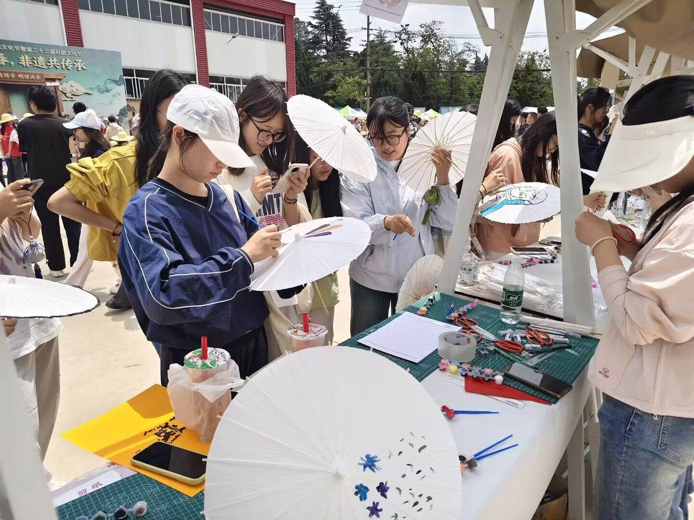


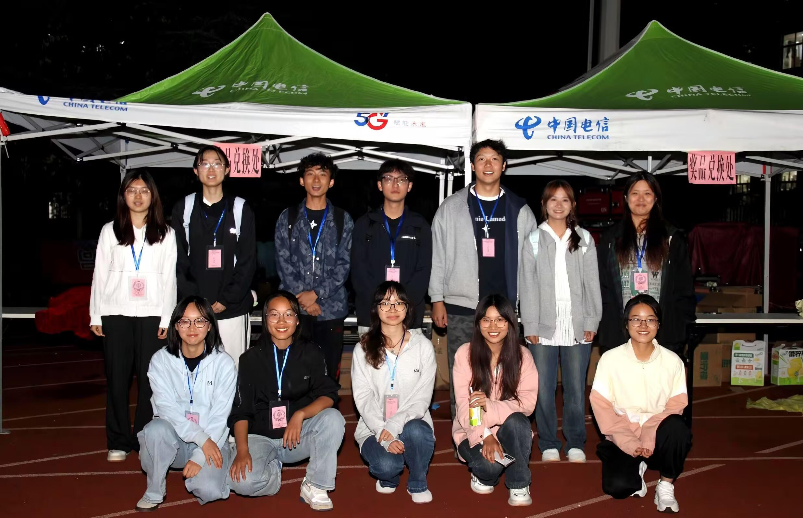
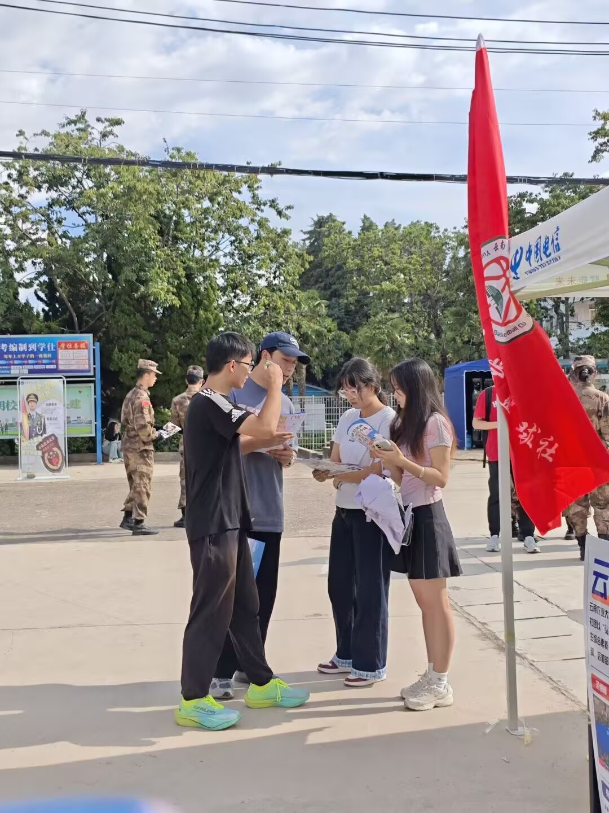

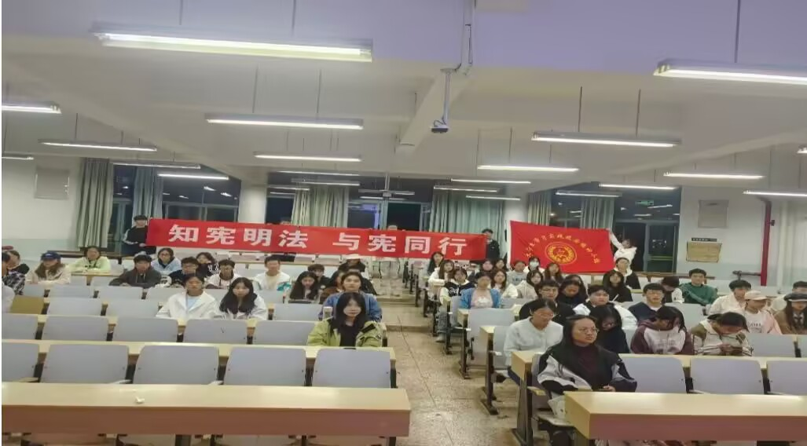
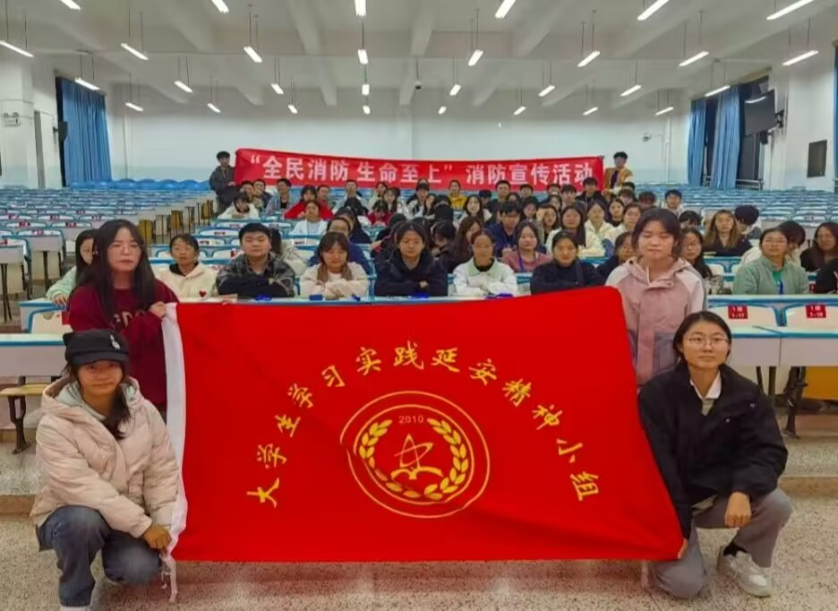
从红色宣讲到文化体验，校延安以实践诠释延安精神的时代内涵

社团招新迎新宣传活动于东校区体操馆旁空地开展。面向全体新生开展社团宣讲、互动交流，介绍学习实践延安精神小组活动内容。吸引众多新生驻足咨询，搭建沟通桥梁，吸纳热爱红色学习的青年加入社团。

4月21日云南农业大学耕读文化节上，大学生学习实践延安精神小组开设特色摊位。活动以剪纸、图画油纸伞创作形式，融合红色文化与传统手工艺，让同学们在动手体验中传承延安精神，感受耕读与红色文化交融的独特魅力。
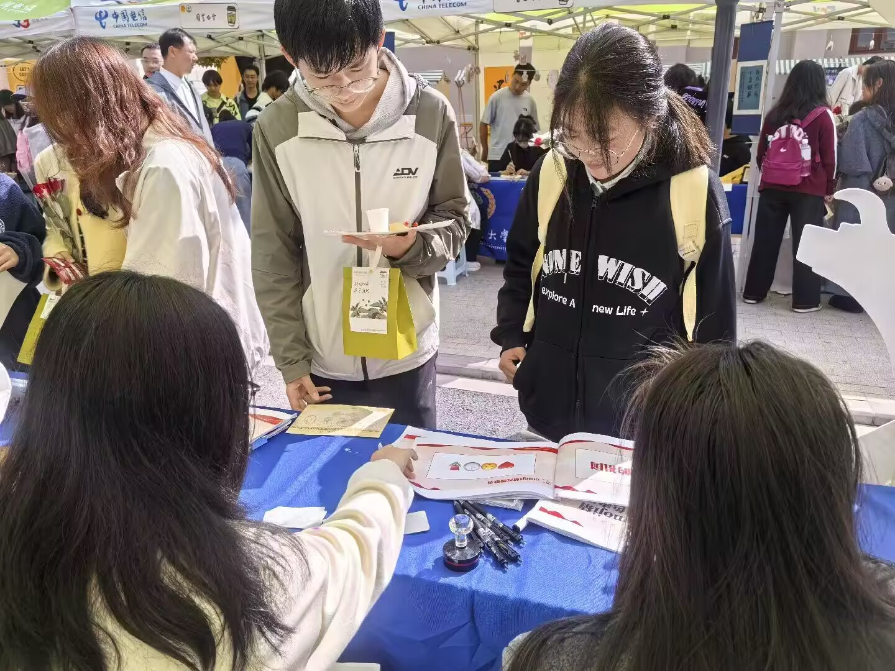
云南农业大学社团嘉年华暨首届大学生咖啡文化节顺利开展。本社团设置看图猜画互动摊位，吸引师生踊跃参与打卡体验。活动融红色文化互动与校园特色文化，展现社团风采，丰富校园文化生活。
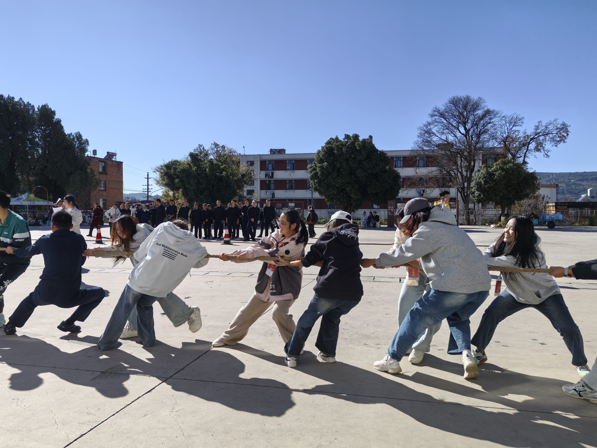
民族趣味运动会汇聚多样传统民族体育项目，兼具趣味性与民族特色。活动鼓励同学们踊跃参与，在竞技互动中感受少数民族文化魅力，增进彼此交流，弘扬民族团结精神，营造和谐多彩的校园氛围。
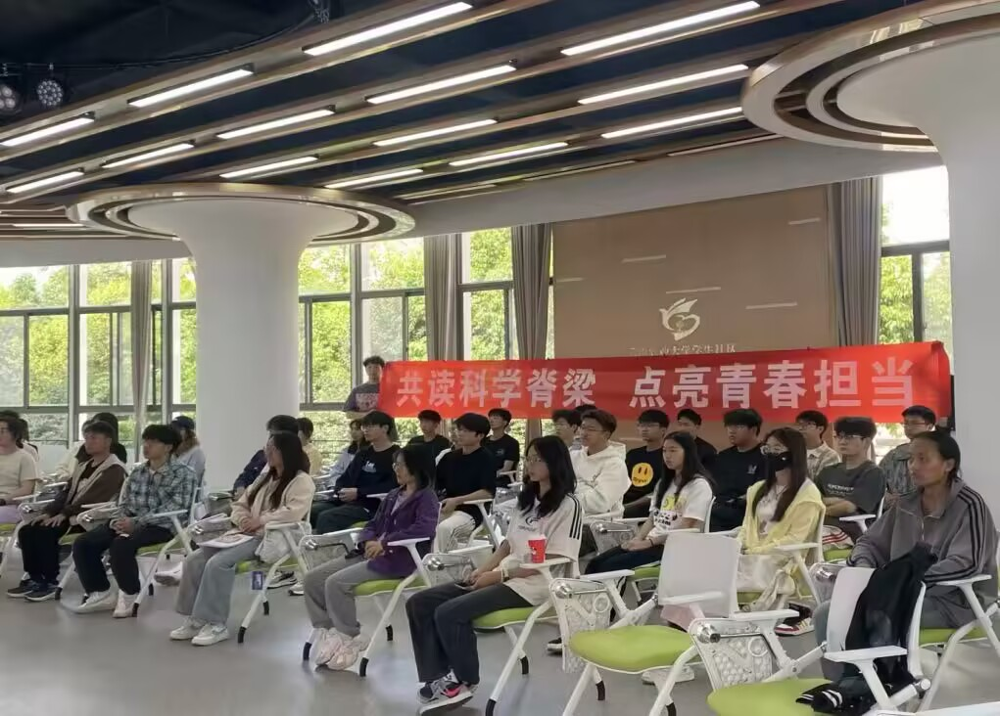
“共读科学脊梁，点亮青春担当”读书分享会于东校区共享交流厅举办。社团组织青年学子共读交流，感悟榜样精神。活动引导同学们汲取奋进力量，厚植理想信念，激励青年勇担时代使命。
每一份荣誉都是奋斗的注脚，每一张证书都是前行的力量
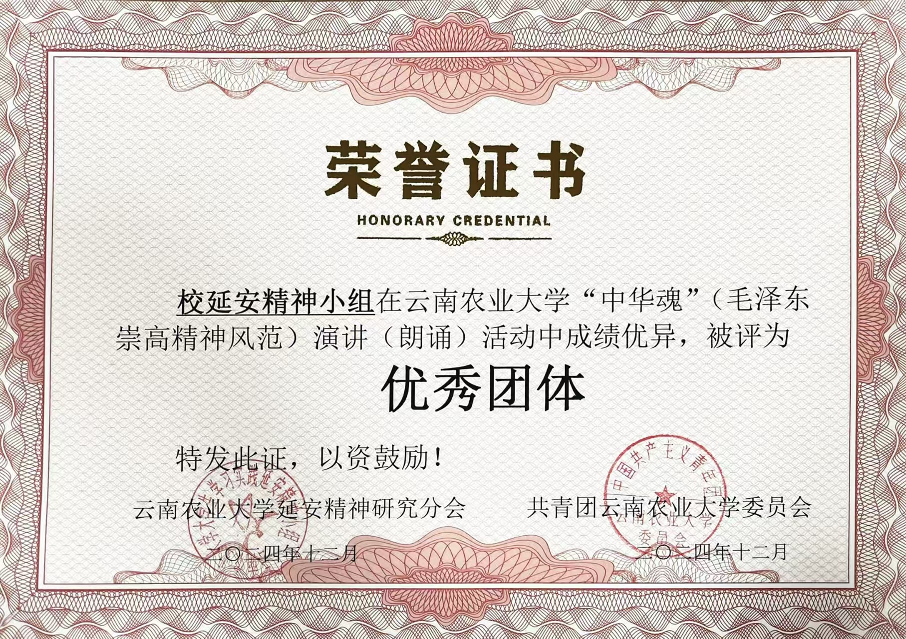
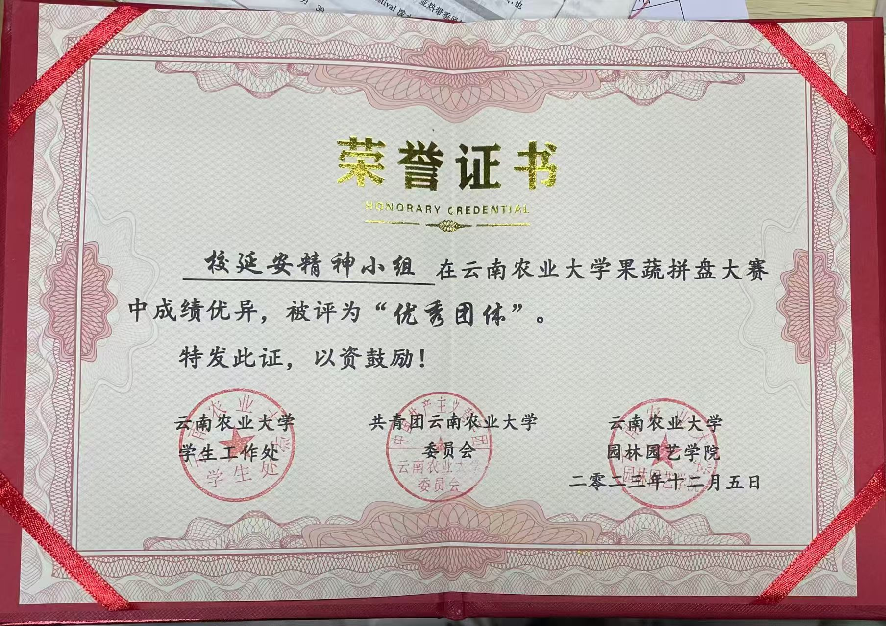
荣誉属于每一位为弘扬延安精神默默付出的校延安人。
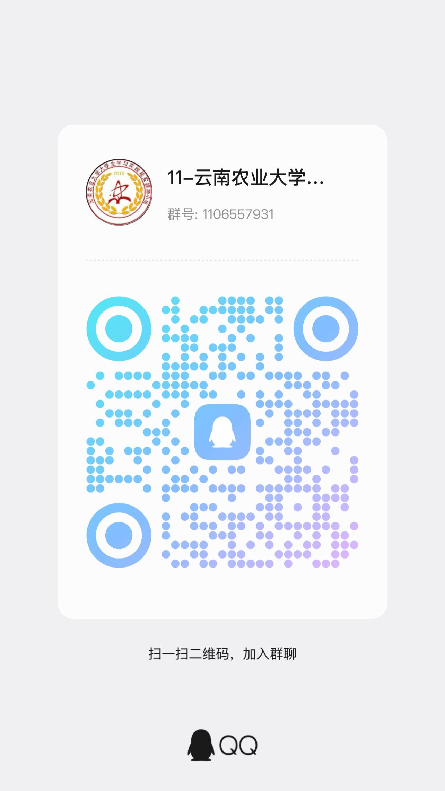